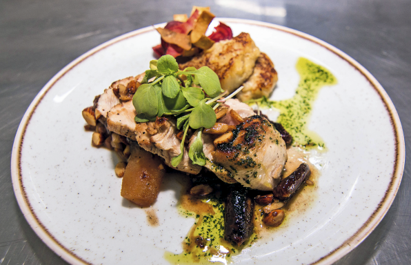
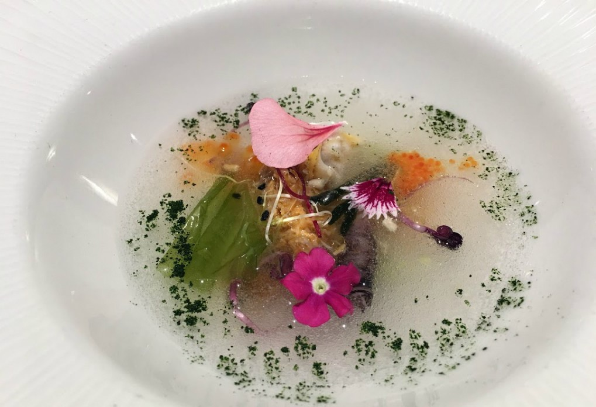
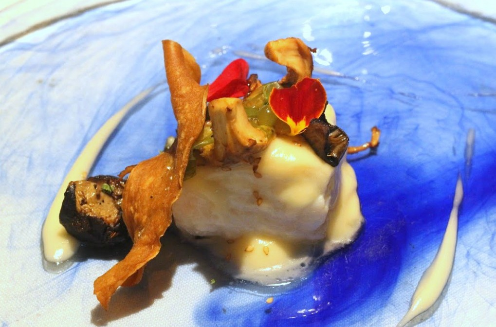
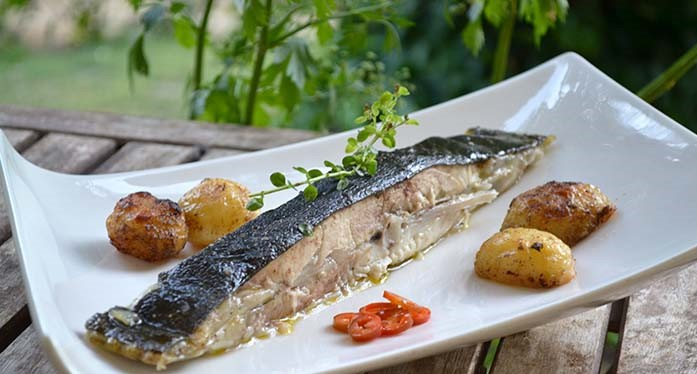
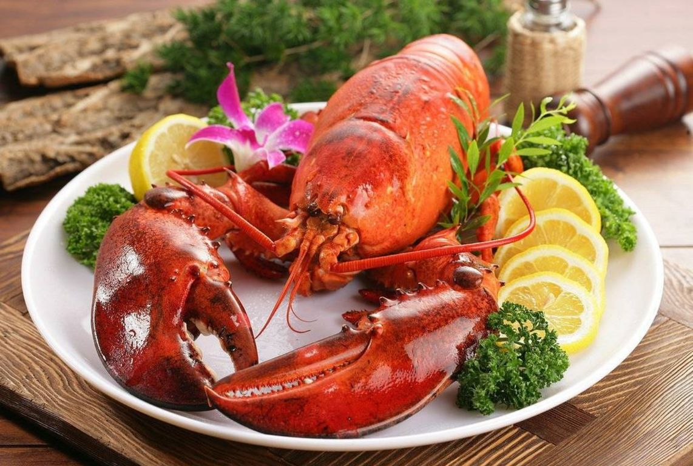
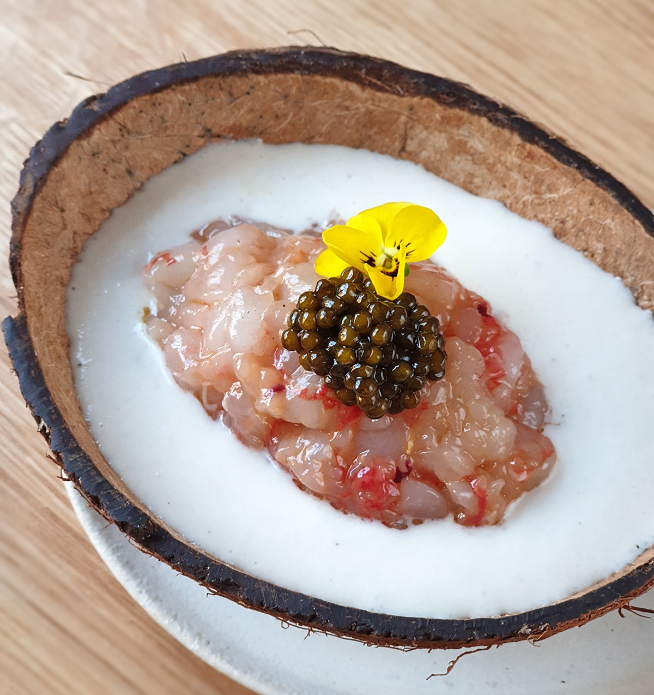

|
Lomo tropical
$380 |
Esta deliciosa receta combina el concepto de menú ligero y saludable, ya que la mezcla de proteína, frutas y vegetales son un complemento ideal para una dieta balanceada. |
|  |
Pavo en salsa de frutos rojos y dátiles
$410 |
Una deliciosa receta que combina el sabor del pavo y los frutos secos. |
 |
Pulpo de roca con miel de membrillo
$450 |
Unas patas de pulpo pasadas por la parrilla, servidas sobre un puré de patata con pimentón y acompañadas de una original miel de membrillo. |
|  |
Sensaciones
$360 |
Es uno de los platos más difíciles de describir. Su bonita presentación, una textura sorprendente y una combinación de sabores marinos y vegetales, queda bien definido por su propio nombre: "sensaciones". |
|  |
Merluza con citronella de Arbidel
$300 |
Este plato de pescado que consigue llevar la merluza a un grado de elegancia y sabor difíciles de olvidar. Una emulsión delicada, una guarnición con distintas texturas y un sabor que te llena, alegrando todos los sentidos. Un plato ligero y difícil de olvidar. |
|  |
Rodaballo “maître d’Hôtel” con ajo negro
$500 |
El rodaballo “maître d’Hôtel” es una receta clásica al mas puro estilo francés, elegante y refinada, la gracia de esta preparación estriba en la mantequilla “maître d’Hôtel” que lleva un chorrito de limón y perejil lo que la convierte en un acompañamiento muy fresco perfecto para aderezar pescados, verduras hervidas y todo tipo de carnes. también se la conoce como “mantequilla a la Mayordoma” |
|  |
Langosta
$600 |
La langosta actualmente es considerada como un platillo de lujo debido a sus altos costos y al simple hecho de ser servida en exclusivos restaurantes esto es debido a que es un crustáceo muy complicado de capturar y a que es un producto de temporada. |
|  |
Ajoblanco de coco, tartar de gamba y caviar
$520 |
El ajoblanco de coco baila fenomenal con el tartar de gamba y el caviar redondea la jugada marina con elegancia y sabor. Una receta fina, elegante y refrescante. |